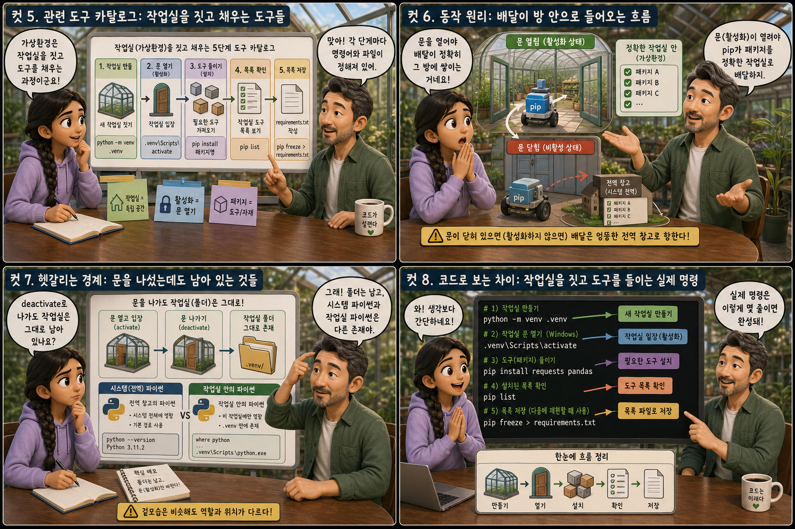
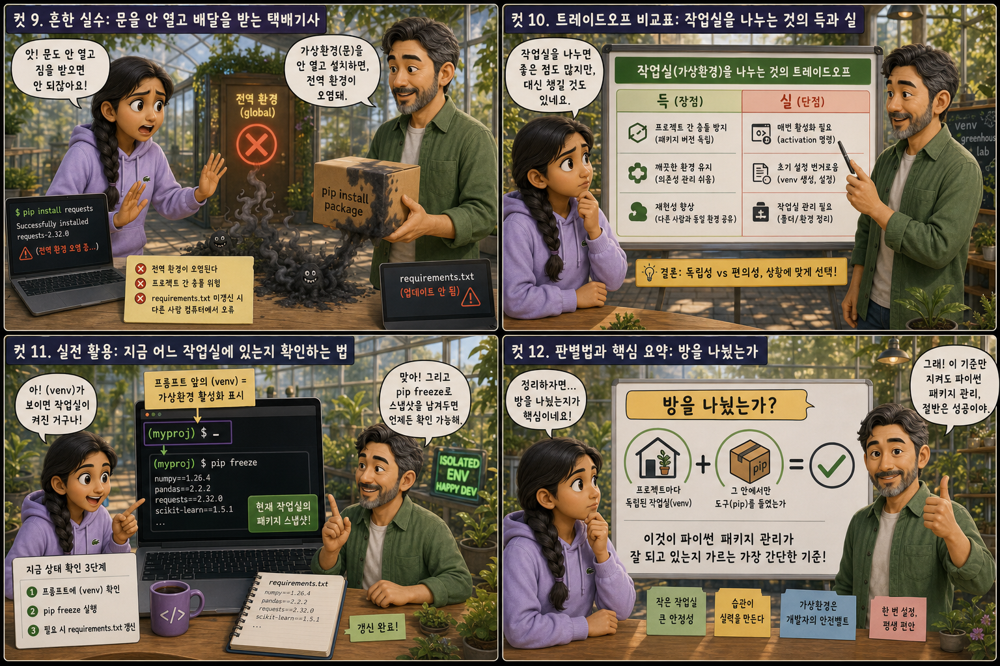

프로젝트마다 따로 마련하는 ‘작업실(venv)’과 그 안으로 도구를 배달하는 ‘택배기사(pip)’에 비유해 12컷으로 풀어봅니다.
venv+pip
파이썬으로 프로젝트를 몇 개만 만들어 봐도 금방 알게 되는 사실이 있습니다. 이 프로젝트는 어떤 라이브러리의 옛날 버전이 필요하고, 저 프로젝트는 최신 버전이 필요한 상황이 반드시 찾아온다는 것입니다. 이 글에서는 그런 충돌을 막기 위해 프로젝트마다 독립된 작업실을 마련해주는 venv와, 그 작업실 안으로 필요한 도구를 배달해주는 pip를 하나씩 풀어봅니다. 컴퓨터 한 대 안에서도 프로젝트마다 완전히 다른 방을 쓸 수 있다는 것, 그것이 이 모든 이야기의 출발점입니다.
PART 1 / 3 — 두 도구의 발견 (컷 01–04)
fourcut-01 — 컷 01 ~ 04
컷 01
내 컴퓨터엔 왜 작업실이 여러 개 필요할까
파이썬 프로젝트를 여러 개 만들다 보면 어느 순간 패키지 버전들이 서로 부딪히기 시작한다.
노트북 화면 속 평범한 파이썬 편집기. 그 뒤쪽 공간이 건물 단면도처럼 갈라지면, 나란히 늘어선 작은 방들이 드러납니다. 각 방은 Python 블루 문으로 표시되고 문 앞에는 프로젝트 이름표가 붙어 있으며, 방과 방 사이는 회색 벽으로 완전히 분리되어 서로 통하지 않습니다. 방 하나 앞에는 노란 택배 상자를 든 택배기사가 서 있습니다. 이 시리즈는 그런 충돌을 막기 위해 프로젝트마다 독립된 작업실을 마련하는 venv와, 그 작업실 안으로 필요한 도구를 배달해주는 pip를 하나씩 풀어봅니다. 컴퓨터 한 대 안에서도 프로젝트마다 완전히 다른 방을 쓸 수 있다는 것이 핵심입니다.
컷 02
정의부터 명확히: 작업실과 택배기사
venv는 프로젝트마다 독립된 파이썬 실행 환경(작업실)을 만들어주는 도구이고, pip는 그 환경 안에 필요한 패키지(도구)를 설치해주는 패키지 관리자다.
venv(virtual environment)는 파이썬 프로젝트마다 독립된 실행 공간을 만들어주는 표준 도구입니다. 이 공간 안에는 그 프로젝트만을 위한 파이썬 인터프리터와 패키지 저장소가 따로 마련됩니다. pip는 파이썬의 공식 패키지 관리자로, pip install 한 줄이면 필요한 라이브러리를 인터넷에서 받아와 지금 활성화된 작업실 안에 설치해줍니다. 작업실이 없으면 택배기사가 물건을 아무 데나 쌓아두듯, venv 없이 pip만 쓰면 모든 패키지가 한 곳(전역 환경)에 뒤섞이게 됩니다.
컷 03
나란히 비교: 작업실을 쓴 경우와 안 쓴 경우
가상환경을 쓰면 프로젝트마다 독립된 패키지 버전을 유지할 수 있지만, 쓰지 않으면 모든 프로젝트가 하나의 전역 환경을 공유해 버전이 충돌한다.
가상환경을 프로젝트마다 만들어 쓰면 각 방 안의 선반에 그 프로젝트에 맞는 패키지 버전만 따로 보관되므로(requests 2.0, requests 1.5, requests 2.8처럼), 다른 프로젝트의 버전과 절대 부딪히지 않습니다. 반대로 가상환경 없이 시스템 전체에 하나뿐인 전역 환경에 계속 설치하면, 프로젝트 A가 요구하는 버전과 프로젝트 B가 요구하는 버전이 같은 이름의 창고 안에서 서로 덮어써버립니다. 결국 한쪽 프로젝트가 갑자기 실행되지 않는 상황이 벌어지는데, 이는 대부분 방을 나누지 않고 창고를 함께 쓴 탓입니다. isolated — no conflict / global — version clash
컷 04
한 문장으로 정리하면
venv는 프로젝트마다 독립된 작업 공간을 만드는 도구이고, pip는 그 공간 안에 필요한 패키지를 설치하는 도구다.
VENV
프로젝트마다 독립된 작업 공간
PIP
그 공간 안에 도구를 배달
definition
이 한 문장만 기억해도 왜 파이썬 프로젝트를 시작할 때마다 새 폴더에서 venv를 만드는지 이해할 수 있습니다. 방을 먼저 짓고, 그다음 그 방 안에서만 물건(패키지)을 들이는 순서라고 생각하면 됩니다.
PART 2 / 3 — 도구와 동작 원리 (컷 05–08)

fourcut-02 — 컷 05 ~ 08
컷 05
관련 도구 카탈로그: 작업실을 짓고 채우는 도구들
작업실을 만들고, 문을 열고 닫고, 도구를 들이는 각 단계마다 정해진 명령어와 파일이 있으며, 이 도구들을 알면 가상환경 관리가 한눈에 들어온다.
python -m venv venv는 현재 폴더 안에 venv라는 이름의 새 작업실을 짓는 명령이고, Windows에서는 venv\Scripts\activate, Mac이나 Linux에서는 source venv/bin/activate로 그 작업실의 문을 열고 들어갑니다. 문을 연 상태(활성화된 상태)에서 pip install을 실행하면 패키지가 정확히 그 작업실 안에만 설치됩니다. requirements.txt는 이 작업실에 어떤 도구들이 배달되었는지 적어둔 목록 문서로, 다른 컴퓨터에서도 같은 작업실을 그대로 재현할 때 씁니다. conda는 pip와 venv를 합친 것과 비슷한 역할을 하는 또 다른 도구로, 특히 데이터 과학 분야에서 자주 쓰입니다.
컷 06
동작 원리: 배달이 방 안으로 들어오는 흐름
작업실 문을 열어야만 pip가 배달하는 패키지가 정확히 그 방 안에 쌓이고, 문이 닫혀 있으면(활성화하지 않으면) 배달은 엉뚱한 전역 창고로 향한다.
python -m venv venv→activate (문 열기)→(venv) 표시 확인→pip install requests→패키지 설치 완료→이 작업실에만 저장
가장 먼저 python -m venv venv 명령으로 프로젝트 폴더 안에 작업실(가상환경 폴더)을 짓습니다. 그다음 Windows에서는 venv\Scripts\activate, Mac/Linux에서는 source venv/bin/activate로 그 작업실의 문을 열면, 터미널 프롬프트 앞에 (venv) 표시가 붙어 지금 이 방 안에 있다는 것을 알려줍니다. 이 상태에서 pip install 패키지이름을 실행해야 그 패키지가 정확히 이 작업실 안에만 설치되고, 다른 프로젝트의 작업실에는 전혀 영향을 주지 않습니다. 문을 열지 않은 채 pip를 쓰면 배달물이 작업실이 아니라 컴퓨터 전체가 공유하는 전역 창고로 들어가 버립니다.
컷 07
헷갈리는 경계: 문을 나섰는데도 남아 있는 것들
가상환경을 나가도(deactivate) 작업실 자체는 폴더로 그대로 남아 있으며, 시스템에 원래 설치된 파이썬과 작업실 안의 파이썬은 서로 다른 존재라는 점을 헷갈리기 쉽다.
deactivate 명령으로 작업실 밖으로 나와도 venv 폴더 자체와 그 안에 설치된 패키지들은 삭제되지 않고 그대로 남아 있습니다. 다시 활성화 명령을 실행하면 언제든 같은 작업실로 돌아갈 수 있습니다. 또 하나 헷갈리기 쉬운 점은, 컴퓨터에 원래 설치된 system python(예: /usr/bin/python)과 가상환경 안의 venv python(예: venv/Scripts/python.exe)은 실행 파일 경로 자체가 다른, 사실상 별개의 존재라는 것입니다. 어느 파이썬과 pip가 지금 사용되고 있는지 헷갈릴 때는 터미널 프롬프트에 (venv) 표시가 있는지부터 확인하는 것이 가장 확실합니다.
컷 08
코드로 보는 차이: 작업실을 짓고 도구를 들이는 실제 명령
가상환경을 만들고 활성화한 뒤 패키지를 설치하고 목록을 저장하는 과정은 몇 줄의 터미널 명령으로 이루어진다.
venv — 작업실 짓고 열기
# 작업실을 짓는다
python -m venv venv
# Windows: 문을 연다
venv\Scripts\activate
# Mac/Linux: 문을 연다
source venv/bin/activate
pip — 도구를 들이고 기록한다
# 프롬프트 앞에 (venv) 확인 후
pip install requests
# 설치 목록을 그대로 저장한다
pip freeze > requirements.txt
python -m venv venv로 작업실을 짓고, 운영체제에 맞게 venv\Scripts\activate 또는 source venv/bin/activate로 문을 열면 프롬프트 앞에 (venv)가 붙습니다. 그 상태에서 pip install requests를 실행하면 requests 패키지가 이 작업실 안에만 설치됩니다. 마지막으로 pip freeze > requirements.txt를 실행하면 지금 이 작업실 안에 어떤 패키지와 버전이 들어 있는지 그대로 목록 파일로 저장할 수 있어, 다른 컴퓨터에서도 같은 작업실을 그대로 다시 지을 수 있습니다.
PART 3 / 3 — 실전 감각과 요약 (컷 09–12)

fourcut-03 — 컷 09 ~ 12
컷 09
흔한 실수: 문을 안 열고 배달을 받는 택배기사
가상환경을 활성화하지 않은 채 pip install을 실행하면 전역 환경이 오염되고, requirements.txt를 갱신하지 않으면 다른 사람의 컴퓨터에서 패키지가 맞지 않는 문제가 생긴다.
⚠ no (venv) prefix = danger
가상환경을 활성화하지 않은 채 pip install을 실행하면 패키지가 프로젝트 전용 작업실이 아니라 컴퓨터 전체가 공유하는 전역 환경에 설치되어, 다른 프로젝트와 버전이 뒤섞이는 오염이 발생합니다. 터미널 프롬프트에 (venv) 표시가 없다면 아직 작업실 밖이라는 뜻입니다.
✓ 매번 확인하고 기록하는 습관
터미널 프롬프트에 (venv) 표시가 있는지 항상 먼저 확인하는 습관이 이 실수를 막아줍니다. 또한 새 패키지를 설치할 때마다 pip freeze > requirements.txt로 목록을 갱신해두지 않으면, 나중에 다른 사람이나 다른 컴퓨터에서 같은 프로젝트를 열었을 때 필요한 패키지가 빠져 있거나 버전이 달라 실행이 안 되는 문제가 생깁니다.
문이 닫힌 작업실 앞에서 택배기사가 상자를 문틈으로 밀어 넣는 대신 옆의 큰 전역 창고에 잘못 쌓아버리는 장면을 상상해 보세요. 낡고 먼지 쌓인 requirements.txt 문서 옆에는 최근 설치된 패키지들이 기록되지 않은 채 쌓여 있고, 이 상태로 다른 컴퓨터에서 프로젝트를 열면 오류부터 마주하게 됩니다.
컷 10
트레이드오프 비교표: 작업실을 나누는 것의 득과 실
프로젝트마다 독립된 작업실을 유지하면 충돌을 막을 수 있지만, 그 대신 매번 활성화 명령을 챙겨야 하는 번거로움이 따른다.
isolation, guaranteed — one extra step, every time
비교 축
가상환경 사용 (venv)
전역 환경 그대로 (no venv)
버전 충돌
프로젝트마다 격리되어 충돌 없음
같은 이름의 패키지가 뒤섞여 충돌
프로젝트 삭제 · 재생성
다른 프로젝트에 영향 없음
삭제·변경 시 다른 프로젝트도 영향받을 수 있음
매번 필요한 절차
activate 명령을 잊지 않아야 함
별도 절차 없이 바로 설치 가능
재현성
requirements.txt로 동일 환경 재현 가능
전역 상태라 재현이 어려움
가상환경을 프로젝트마다 만들어 쓰면 각 작업실이 완전히 분리되어 있어 패키지 버전 충돌을 원천적으로 막을 수 있고, 한 프로젝트를 지우거나 다시 만들 때도 다른 프로젝트에 영향을 주지 않습니다. 다만 그 대가로 터미널을 새로 열 때마다, 혹은 프로젝트를 바꿀 때마다 매번 활성화 명령을 실행해야 하는 번거로움이 생깁니다. 이 번거로움은 에디터의 자동 활성화 기능이나 스크립트로 어느 정도 줄일 수 있지만, 활성화 자체를 잊어버리면 앞서 본 흔한 실수로 바로 이어진다는 점을 기억해야 합니다.
컷 11
실전 활용: 지금 어느 작업실에 있는지 확인하는 법
터미널 프롬프트 앞의 (venv) 표시로 지금 가상환경이 켜져 있는지 확인하고, pip freeze로 지금 작업실에 무엇이 들어 있는지 언제든 스냅샷을 남길 수 있다.
🔍 “지금 작업실 안에 있는가” venv 확인
터미널 프롬프트 맨 앞 확인
(venv) 표시가 있으면 작업실 안
표시가 없으면 아직 문 밖
🔍 “지금 무엇이 들어있는가” pip 확인
pip freeze 실행
requirements.txt로 저장
다른 컴퓨터에서 재현 가능한지 확인
지금 가상환경이 켜져 있는지 헷갈릴 때는 터미널 프롬프트 맨 앞을 보면 됩니다. (venv)라는 표시가 붙어 있으면 지금 이 작업실 안에서 명령을 실행하고 있다는 뜻이고, 표시가 없다면 아직 문을 열지 않은 상태입니다. 그리고 지금 이 작업실에 어떤 패키지들이 어떤 버전으로 설치되어 있는지 궁금하거나 다른 컴퓨터에도 똑같이 재현하고 싶다면, pip freeze > requirements.txt를 실행해 현재 상태를 그대로 파일에 저장해두면 됩니다. 이 두 습관만 챙겨도 가상환경 관련 사고의 대부분을 미리 막을 수 있습니다.
컷 12
판별법과 핵심 요약: 방을 나눴는가
프로젝트마다 독립된 작업실(venv)이 있고 그 안에서만 도구(pip)를 들였는가, 그것이 파이썬 패키지 관리가 잘 되고 있는지 가르는 가장 간단한 기준이다.
가장 간단한 판별법은 이것입니다. 지금 이 프로젝트가 자기만의 작업실(가상환경)을 가지고 있고, 그 방의 문을 연 상태에서만 pip로 도구를 들였는가를 확인하는 것입니다. venv는 프로젝트마다 독립된 공간을 만들어 패키지 버전 충돌을 막아주고, pip는 그 공간 안에 정확히 필요한 패키지만 배달해주는 역할을 합니다. 프롬프트의 (venv) 표시를 확인하는 습관과 requirements.txt를 꾸준히 갱신하는 습관만 있으면, 프로젝트가 몇 개로 늘어나도 방마다 조용히 자기 할 일을 하는 작업실들처럼 서로 부딪히지 않고 유지됩니다.
venv는 작업실, pip는 택배기사활성화해야 문이 열린다(venv) 표시로 확인pip freeze로 기록안 나누면 버전 충돌판별법: 방이 나뉘어 있는가
하나의 프로젝트, 하나의 작업실
venv는 프로젝트마다 독립된 작업 공간을 만들어 패키지 버전이 서로 부딪히지 않게 지켜주고, pip는 그 공간 안에 필요한 도구만 정확히 배달합니다. 문을 나서도 남아 있는 작업실처럼, 잘 나뉜 방들은 프로젝트가 늘어나도 서로 조용히 자기 할 일을 계속합니다.